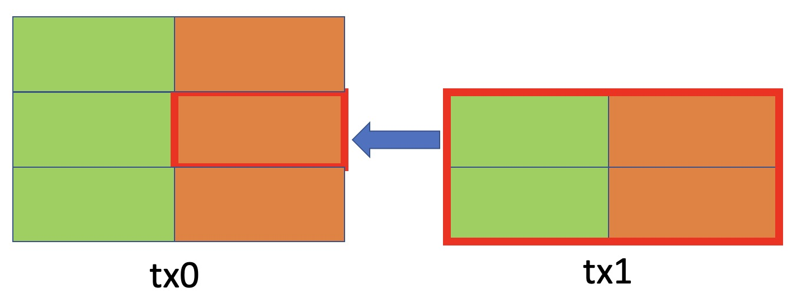

Script Context
In the UTXO model, the context of validating a smart contract is the UTXO containing it and the transaction spending it, including its inputs and outputs. In the following example, when the second of input of transaction tx1 (2 inputs and 2 outputs) is spending the second output of tx0 (3 inputs and 3 outputs), the context for the smart contract in the latter output is roughly the UTXO and tx1 circled in red.

The context only contains local information. This is different from account-based blockchains (like Ethereum) where context consists of the global state of the entire blockchain. A single shared global state across all smart contracts jeopardizes scalability because transactions must be sequentially processed, resulting in potential race conditions.
This context is expressed in the ScriptContext interface.
/**
* The context of the SHPreimage.
* @see {@link https://github.com/bitcoin/bips/blob/master/bip-0341.mediawiki#common-signature-message | BIP341}
* @note: currently, we only support the basic sighash type(sighash_all), other sighash types are not supported.
* @todo: support other sighash types, like sighash_single, sighash_none,...
*/
export type SHPreimage = {
/**
* 4 bytes.
* version number of the transaction
* nVersion defined in @see {@link https://github.com/bitcoin/bips/blob/master/bip-0341.mediawiki#common-signature-message | BIP341}
*/
nVersion: ByteString;
/**
* 4 bytes.
* locktime of the transaction
* nLockTime defined in @see {@link https://github.com/bitcoin/bips/blob/master/bip-0341.mediawiki#common-signature-message | BIP341}
*/
nLockTime: ByteString;
/**
* 32 bytes.
* the SHA256 of the serialization of all input outpoints.
* If the ANYONECANPAY SIGHASH type is not set, it's double SHA256 of the serialization of all input outpoints.
* Otherwise, it's a uint256 of 0x0000......0000.
* sha_prevouts defined in @see {@link https://github.com/bitcoin/bips/blob/master/bip-0341.mediawiki#common-signature-message | BIP341}
*/
shaPrevouts: ByteString;
/**
* 32 bytes.
* the SHA256 of the serialization of all input amounts.
* sha_amounts defined in @see {@link https://github.com/bitcoin/bips/blob/master/bip-0341.mediawiki#common-signature-message | BIP341}
*/
shaSpentAmounts: ByteString;
/**
* 32 bytes.
* the SHA256 of all spent outputs' scriptPubKeys, serialized as script inside CTxOut
* sha_scriptpubkeys defined in @see {@link https://github.com/bitcoin/bips/blob/master/bip-0341.mediawiki#common-signature-message | BIP341}
*/
shaSpentScripts: ByteString;
/**
* 32 bytes.
* the SHA256 of the serialization of all input nSequence.
* sha_sequences defined in @see {@link https://github.com/bitcoin/bips/blob/master/bip-0341.mediawiki#common-signature-message | BIP341}
*/
shaSequences: ByteString;
/**
* 32 bytes
* the SHA256 of the serialization of all outputs.
* sha_outputs defined in @see {@link https://github.com/bitcoin/bips/blob/master/bip-0341.mediawiki#common-signature-message | BIP341}
*/
shaOutputs: ByteString;
/**
* 1 byte.
* equal to (ext_flag * 2) + annex_present, where annex_present is 0 if no annex is present, or 1 otherwise (the original witness stack has two or more witness elements, and the first byte of the last element is 0x50)
* spendType defined in @see {@link https://github.com/bitcoin/bips/blob/master/bip-0341.mediawiki#common-signature-message | BIP341}
*/
spendType: ByteString;
/**
* 4 bytes
* index of this input in the transaction input vector. Index of the first input is 0x00000000.
* input_index defined in @see {@link https://github.com/bitcoin/bips/blob/master/bip-0341.mediawiki#common-signature-message | BIP341}
*/
inputIndex: ByteString;
/**
* 32 bytes.
* the tap leaf hash of the input
* tapleaf_hash defined in @see {@link https://github.com/bitcoin/bips/blob/master/bip-0342.mediawiki#common-signature-message-extension | BIP342}
*/
tapLeafHash: ByteString;
/**
* 1 byte.
* a constant value 0x00 representing the current version of public keys in the tapscript signature opcode execution.
* key_version defined in @see {@link https://github.com/bitcoin/bips/blob/master/bip-0342.mediawiki#common-signature-message-extension | BIP342}
*/
keyVersion: ByteString;
/**
* 4 bytes.
* the opcode position of the last executed OP_CODESEPARATOR before the currently executed signature opcode, with the value in little endian (or 0xffffffff if none executed). The first opcode in a script has a position of 0. A multi-byte push opcode is counted as one opcode, regardless of the size of data being pushed. Opcodes in parsed but unexecuted branches count towards this value as well.
* codesep_pos defined in @see {@link https://github.com/bitcoin/bips/blob/master/bip-0342.mediawiki#common-signature-message-extension | BIP342}
*/
codeSepPos: ByteString;
/**
* 31 bytes
* e is sha256 of the sighash, but without last byte
*/
_eWithoutLastByte: ByteString;
/**
* 1 bytes
* last byte of e
*/
_eLastByte: Int32;
};
/**
* The context of the previous outputs.
*/
export type PrevoutsCtx = {
/**
* @type {FixedArray<ByteString, typeof MAX_INPUT>}
* prevouts is an array of the previous outputs. [prevout1(txid1 + index1), prevout2(txid2 + index2), ...] length is MAX_INPUT. The rest is empty ByteString if inputs are less than MAX_INPUT
* each non-empty element is a ByteString of 36 bytes, which is the concatenation of txid and index.
*/
prevouts: FixedArray<ByteString, typeof MAX_INPUT>;
/**
* @type {Int32}
* index of this input in the transaction input vector. Index of the first input is 0.
*/
inputIndexVal: Int32;
/**
* @type {Int32}
* index of this output in the transaction output vector. Index of the first output is 0.
*/
outputIndexVal: Int32;
/**
* @type {ByteString}
* 32 bytes
* txid of current prevout
*/
spentTxhash: ByteString;
/**
* @type {Int32}
* 4 bytes
* index of this output in the transaction output vector. Index of the first output is 0x00000000.
*/
outputIndex: ByteString;
};
/**
* The context of the spent scripts.
* spentScripts is an array of the spent scripts, that is the script of the previous output. [spentScript1, spentScript2, ...], length is MAX_INPUT. The rest is empty ByteString if inputs are less than MAX_INPUT.
* each non-empty element is a ByteString, which is the script of the previous output.
*/
export type SpentScriptsCtx = FixedArray<ByteString, typeof MAX_INPUT>;
/**
* The context of the spent amounts.
* spentAmounts is an array of the spent amounts, that is the amount of the previous output. [spentAmount1, spentAmount2, ...], length is MAX_INPUT. The rest is empty ByteString if inputs are less than MAX_INPUT.
* each non-empty element is a ByteString of 8 bytes, which is the amount of the previous output.
*/
export type SpentAmountsCtx = FixedArray<ByteString, typeof MAX_INPUT>;
/**
* Same as `CompactTxHashPreimage`, but can more easily parse out the HashRoot contained in the transaction
*/
export type HashRootTxHashPreimage = {
// version
version: ByteString;
// the number of inputs
inputCountVal: Int32;
// input list, each element represents an individual input
inputList: FixedArray<ByteString, typeof TX_INPUT_COUNT_MAX>;
// the number of outputs
outputCountVal: Int32;
// state hash root, used to build the first output
hashRoot: ByteString;
// suffixes, including outputs except for the first output, and lock time,
// elements are split by byte length
suffixList: FixedArray<ByteString, typeof TX_HASH_PREIMAGE2_SUFFIX_ARRAY_SIZE>;
};
/**
* A structure used to verify the contract state contained in the input
*/
export type InputStateProof = {
/**
* @type {HashRootTxHashPreimage}
* the preimage of the previous transaction
*/
txHashPreimage: HashRootTxHashPreimage;
/**
* @type {Int32}
* index of this output in the transaction output vector. Starts from 0.
*/
outputIndexVal: Int32;
/**
* @type {StateHashes}
* the txo state hashes of the previous transaction
*/
stateHashes: StateHashes;
};
/**
* A array representing all input state proofs
*/
export type InputStateProofs = FixedArray<InputStateProof, typeof TX_INPUT_COUNT_MAX>;
/**
* The context derived from other context for the current input.
*/
type DerivedCtx = {
/**
* @type {Int32}
* input count of the current transaction
*/
inputCount: Int32;
/**
* @type {Outpoint}
* The outpoint of the current input.
*/
prevout: Outpoint;
/**
* @type {ByteString}
* The locking script of the current input.
*/
spentScript: ByteString;
/**
* @type {ByteString}
* The amount of the current input.
*/
spentAmount: ByteString;
/**
* @type {InputStateProof}
* The state proof of the current input.
*/
inputStateProof: InputStateProof;
};
/**
* The context of the current contract, can be accessed by `this.ctx` in the contract.
*/
export interface IContext extends SHPreimage, DerivedCtx {
/**
* @type {Int32}
* Index of this input in the transaction input vector. Starts from 0.
*/
inputIndexVal: Int32;
/**
* @type {FixedArray<Outpoint, typeof TX_INPUT_COUNT_MAX>}
* prevouts is an array of the previous outpoints.
* each non-empty element is a ByteString of 36 bytes, which is the concatenation of txid and index.
*/
prevouts: Prevouts;
/**
* @type {SpentScripts}
*
*/
spentScripts: SpentScripts;
/**
* @type {SpentAmounts}
*
*/
spentAmounts: SpentAmounts;
/**
* @type {StateHashes}
* The hashes of the next(new) states in the outputs of the current transaction.
*/
nextStateHashes: StateHashes;
/**
* @type {InputStateProofs}
* The state proofs of the inputs.
*/
inputStateProofs: InputStateProofs;
}
You can directly access the context through this.ctx in any public @method. It can be considered additional information a public method gets when called, besides its function parameters.
The example below accesses the spentScript of the spending transaction.
import { assert, ByteString, sha256, method, SmartContract, TxUtils } from '@scrypt-inc/scrypt-ts-btc';
export class Clone extends SmartContract {
constructor() {
super();
}
// see https://scrypt.io/scrypt-ts/getting-started/what-is-scriptcontext#sighash-type
@method()
public unlock() {
// make sure balance in the contract does not change
const script = this.ctx.spentScripts[Number(this.ctx.inputIndexVal)]
const amount: ByteString = this.ctx.spentAmounts[Number(this.ctx.inputIndexVal)]
// output containing the latest state
const output: ByteString = TxUtils.buildOutput(script, amount);
// verify current tx has this single output
assert(this.checkOutputs(output), 'Outputs mismatch with the transaction context')
}
}
Access inputs and outputs
The inputs and outputs of the spending transaction are not directly included in ScriptContext, but their hashes/digests. To access them, we can build them first and validate the hash to the expected digest, which ensures they are actually from the spending transaction.
The following example ensures both Alice and Bob get 1000 satoshis from the contract.
import { method, prop, SmartContract, assert, Addr, ByteString, TxUtils, sha256 } from '@scrypt-inc/scrypt-ts-btc';
export class DesignatedReceivers extends SmartContract {
@prop()
readonly alice: Addr
@prop()
readonly bob: Addr
constructor(alice: Addr, bob: Addr) {
super(...arguments)
this.alice = alice
this.bob = bob
}
@method()
public payout() {
const aliceOutput: ByteString = TxUtils.buildP2PKHOutput(this.alice, TxUtils.toSatoshis(1000n))
const bobOutput: ByteString = TxUtils.buildP2PKHOutput(this.bob, TxUtils.toSatoshis(1000n))
let outputs = aliceOutput + bobOutput
// require a change output
outputs += this.buildChangeOutput();
// ensure outputs are actually from the spending transaction as expected
assert(this.ctx.shaOutputs == sha256(outputs), 'shaOutputs mismatch')
}
}